<title>site-craft · round 2 — type audition (+ concept lines)</title>
<style>
  :root{
    --paper:#ffffff; --ink:#20241a; --olive:#4b521f; --olive-soft:#5c6430;
    --signal:#b8431c; --muted:#666c4e; --hair:#4b521f2e; --panel:#f6f6f0;
    --mono:ui-monospace,"SF Mono","Cascadia Mono",Menlo,Consolas,monospace;
  }
  @media (prefers-color-scheme: dark){
    :root{ --paper:#181a12; --ink:#e6e7da; --olive:#c0ca70; --olive-soft:#a8b25c;
           --signal:#ff9166; --muted:#a3a98a; --hair:#c0ca7038; --panel:#20231736; }
  }
  :root[data-theme="dark"]{ --paper:#181a12; --ink:#e6e7da; --olive:#c0ca70; --olive-soft:#a8b25c;
           --signal:#ff9166; --muted:#a3a98a; --hair:#c0ca7038; --panel:#20231736; }
  :root[data-theme="light"]{ --paper:#ffffff; --ink:#20241a; --olive:#4b521f; --olive-soft:#5c6430;
           --signal:#b8431c; --muted:#666c4e; --hair:#4b521f2e; --panel:#f6f6f0; }
  html{ background:var(--paper); }
  body{
    margin:0 auto; max-width:66rem; padding:3rem 1.25rem 5rem;
    background:var(--paper); color:var(--ink);
    font:400 1rem/1.6 system-ui,-apple-system,"Segoe UI",sans-serif;
  }
  header.top{ margin-bottom:3rem; }
  .kicker{ font-family:var(--mono); font-size:0.8125rem; color:var(--muted); margin:0 0 0.75rem; }
  h1{ font-size:clamp(1.6rem,4vw,2.3rem); line-height:1.15; margin:0 0 0.75rem; letter-spacing:-0.015em; text-wrap:balance; }
  .intro{ max-width:62ch; color:var(--ink); margin:0; }
  .intro b{ color:var(--olive); }

  nav.toc{ margin:1.5rem 0 0; font-size:0.9375rem; display:flex; flex-wrap:wrap; gap:0.4rem 1.4rem; padding:0; }
  nav.toc a{ color:var(--olive); }

  section.comp{ border-top:1px solid var(--hair); padding-top:2rem; margin-top:3rem; }
  .comphead{ display:flex; justify-content:space-between; align-items:baseline; gap:1rem; flex-wrap:wrap; margin-bottom:0.4rem; }
  .comphead h2{ font-size:1.35rem; margin:0; letter-spacing:-0.01em; }
  .comphead h2 .no{ color:var(--signal); font-family:var(--mono); font-size:1.05rem; margin-right:0.5rem; }
  .face{ font-family:var(--mono); font-size:0.8125rem; color:var(--muted); }
  .thesis{ max-width:70ch; margin:0.25rem 0 1.5rem; font-size:1.0625rem; }
  .thesis b{ color:var(--olive); }

  figure{ margin:0 0 1rem; }
  figure img{ width:100%; height:auto; display:block; border:1px solid var(--hair); }
  figcaption{ font-family:var(--mono); font-size:0.75rem; color:var(--muted); padding-top:0.4rem; }

  .row{ display:grid; grid-template-columns:minmax(0,2.2fr) minmax(0,1fr); gap:1.25rem; align-items:start; }
  @media (max-width:720px){ .row{ grid-template-columns:1fr; } }

  .notes{ display:grid; gap:1rem; }
  .notes h3{ font-size:0.8125rem; font-family:var(--mono); font-weight:400; color:var(--muted); margin:0 0 0.3rem; }
  .notes ul{ margin:0; padding-left:1.1rem; font-size:0.9375rem; }
  .notes li{ margin-bottom:0.35rem; }
  .notes .risk li::marker{ color:var(--signal); }
  .notes .str li::marker{ color:var(--olive); }

  .reco{
    margin-top:3.5rem; border:1px solid var(--olive); padding:1.5rem 1.75rem;
    background:var(--panel);
  }
  .reco h2{ margin:0 0 0.75rem; font-size:1.2rem; }
  .reco h2::before{ content:"→ "; color:var(--signal); }
  .reco p{ max-width:70ch; margin:0 0 0.75rem; }
  .reco p:last-child{ margin:0; }
  .reco .verdictline{ color:var(--muted); font-size:0.9375rem; }
  a{ color:var(--olive); }

  .headstrip{ display:grid; grid-template-columns:repeat(2, minmax(0,1fr)); gap:1rem; }
  @media (max-width:720px){ .headstrip{ grid-template-columns:1fr; } }
  .headstrip figure{ margin:0; }
</style>
<header class="top">
  <p class="kicker">site-craft · phase 2 · round 2 · 2026-07-13</p>
  <h1>Six voices, five lines — pick the site’s voice</h1>
  <p class="intro">V2’s skeleton, frozen. The audition page is <b>live and switchable</b>
  (←/→ cycles voices, ↑/↓ cycles headline concepts, all combinations linkable by URL):
  <b>http://100.67.202.87:4173/comps/audition/</b>. Every face was measured as actually loaded
  (canvas width deltas, not just <code>fonts.check</code>). The floating mark got its first
  motion pass — idle drift + pointer parallax, static under reduced-motion. Your “from zero
  to hero” is in the slate. Faces below shown with it; flip lines live to taste.</p>
</header>

<section class="comp" id="archivo">
  <div class="comphead"><h2><span class="no">◆</span>Archivo — expanded industrial (the incumbent)</h2>
  <span class="face">live: /comps/audition/#f=archivo&h=zero</span></div>
  <p class="thesis">Carried rounds 1–1.5. Variable width+weight makes it the safest system font of the six — and the least distinctive. Competent, slightly anonymous.</p>
  <div class="row">
    <figure>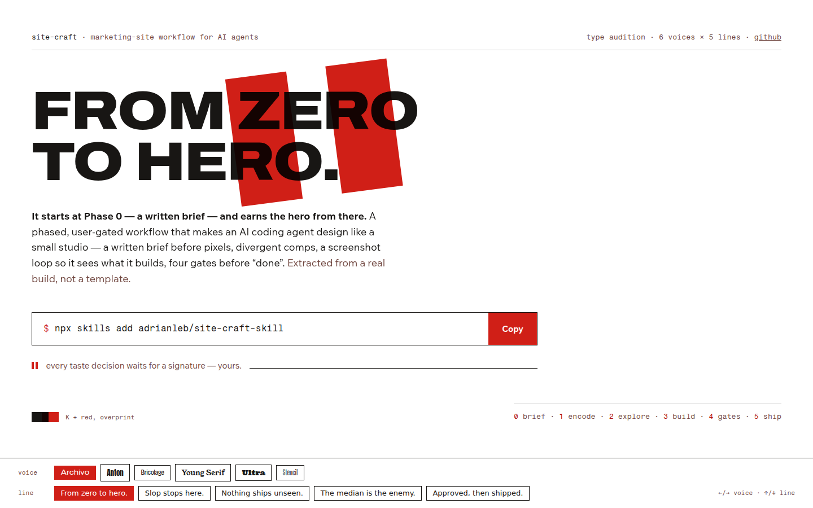<figcaption>1440 × 900 · line: “From zero to hero.”</figcaption></figure>
    <figure>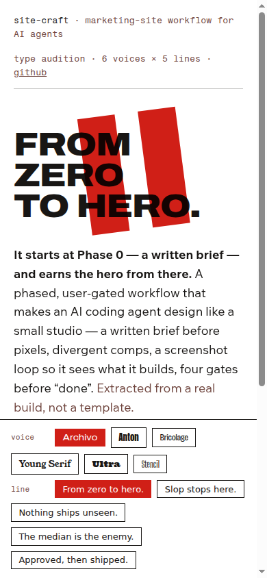<figcaption>390</figcaption></figure>
  </div>
</section>
<section class="comp" id="anton">
  <div class="comphead"><h2><span class="no">◆</span>Anton — condensed woodtype poster</h2>
  <span class="face">live: /comps/audition/#f=anton&h=zero</span></div>
  <p class="thesis">Native uppercase, huge presence, historically a printing face. With the red bars it completes the press-poster sentence. One weight only — hierarchy must come from size and case.</p>
  <div class="row">
    <figure>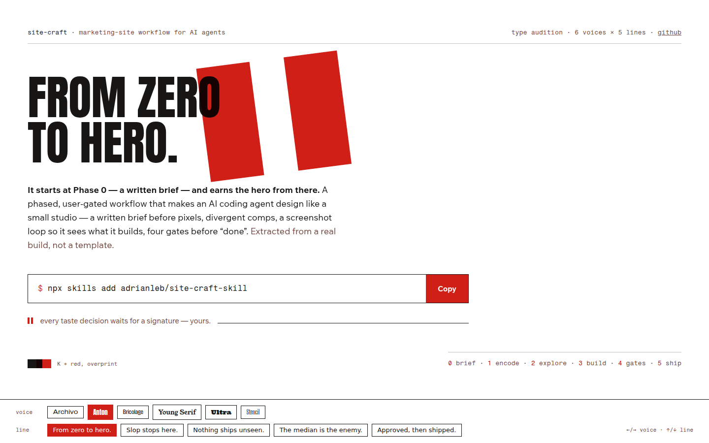<figcaption>1440 × 900 · line: “From zero to hero.”</figcaption></figure>
    <figure>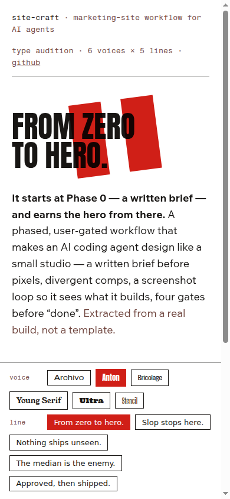<figcaption>390</figcaption></figure>
  </div>
</section>
<section class="comp" id="bricolage">
  <div class="comphead"><h2><span class="no">◆</span>Bricolage Grotesque — ink-trap contemporary</h2>
  <span class="face">live: /comps/audition/#f=bricolage&h=zero</span></div>
  <p class="thesis">Lowercase warmth with printy ink traps; full variable axes for a real type system. The most flexible distinctive option.</p>
  <div class="row">
    <figure>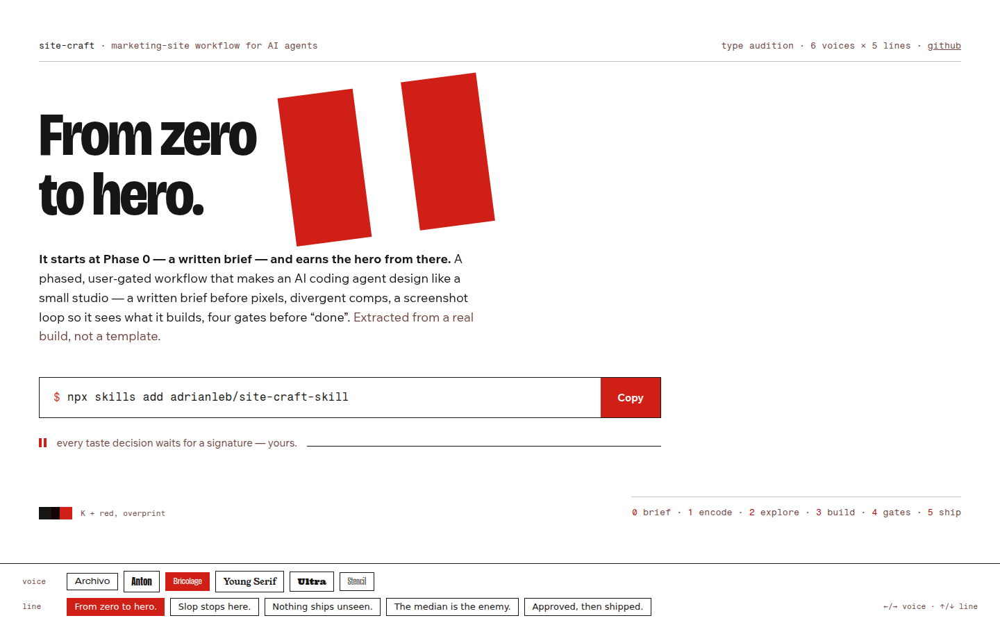<figcaption>1440 × 900 · line: “From zero to hero.”</figcaption></figure>
    <figure>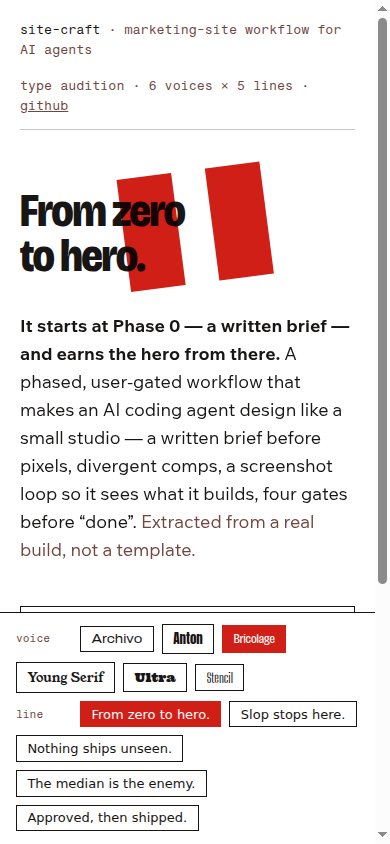<figcaption>390</figcaption></figure>
  </div>
</section>
<section class="comp" id="young">
  <div class="comphead"><h2><span class="no">◆</span>Young Serif — heavy oldstyle</h2>
  <span class="face">live: /comps/audition/#f=young&h=zero</span></div>
  <p class="thesis">Letterpress-book gravity; the serif counterpoint. Gorgeous against the bars, but reads bookish for a terminal-dwelling audience.</p>
  <div class="row">
    <figure>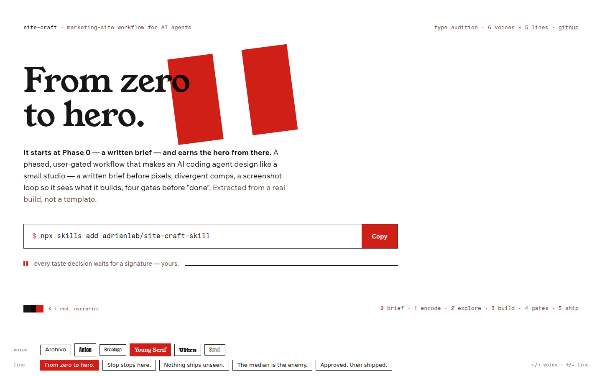<figcaption>1440 × 900 · line: “From zero to hero.”</figcaption></figure>
    <figure>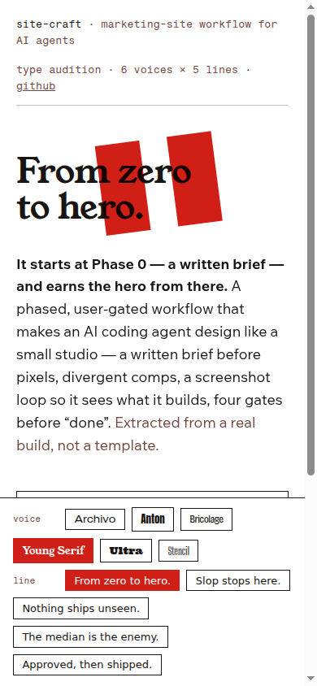<figcaption>390</figcaption></figure>
  </div>
</section>
<section class="comp" id="ultra">
  <div class="comphead"><h2><span class="no">◆</span>Ultra — fat-face Clarendon</h2>
  <span class="face">live: /comps/audition/#f=ultra&h=zero</span></div>
  <p class="thesis">The loudest charmer; pure woodtype poster. Novelty compounds over a full page — better as a guest than a resident.</p>
  <div class="row">
    <figure>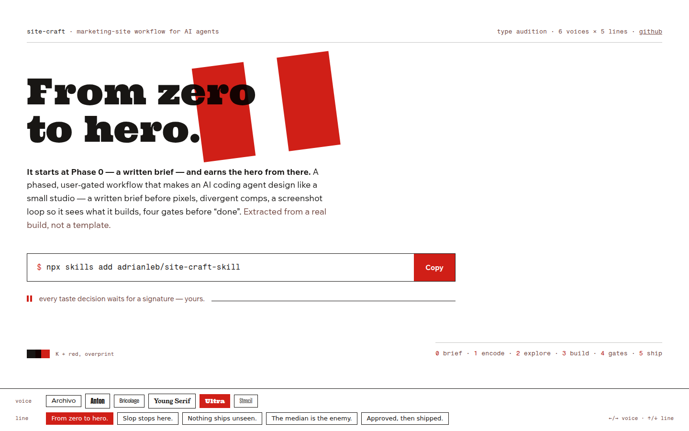<figcaption>1440 × 900 · line: “From zero to hero.”</figcaption></figure>
    <figure>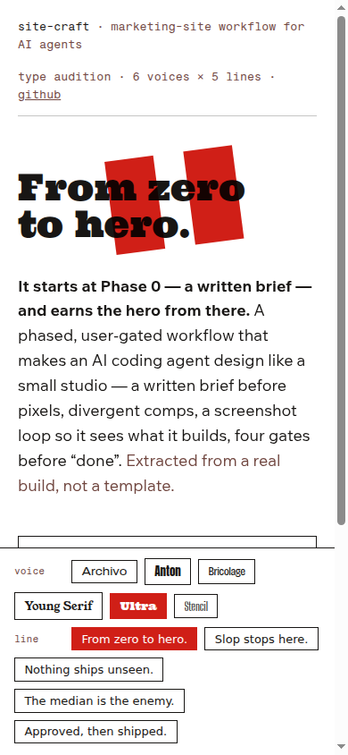<figcaption>390</figcaption></figure>
  </div>
</section>
<section class="comp" id="stencil">
  <div class="comphead"><h2><span class="no">◆</span>Big Shoulders Stencil — the wildcard</h2>
  <span class="face">live: /comps/audition/#f=stencil&h=zero</span></div>
  <p class="thesis">Crate-stamp stencil; press-room adjacent. As the everyday voice it tips into costume; as a stamp/label accent it could return later.</p>
  <div class="row">
    <figure>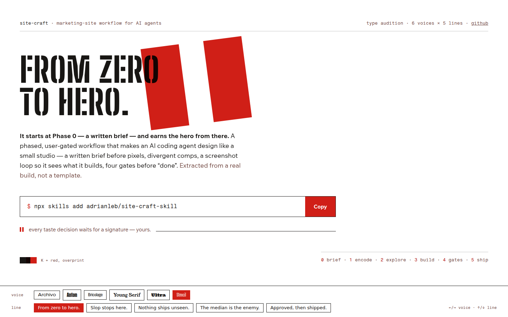<figcaption>1440 × 900 · line: “From zero to hero.”</figcaption></figure>
    <figure>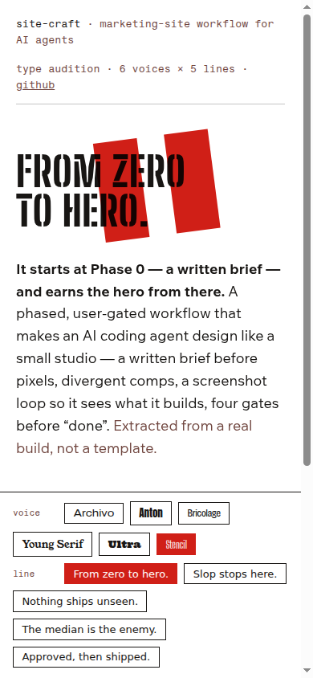<figcaption>390</figcaption></figure>
  </div>
</section>
<section class="comp" id="lines">
  <div class="comphead"><h2><span class="no">¶</span>The other four lines</h2><span class="face">shown in Anton; all switchable live</span></div>
  <p class="thesis">Whichever line wins the hero, the others don’t die — each names a real
  below-fold section (the gates, the screenshot loop, divergent comps, the checkpoint).</p>
  <div class="headstrip"><figure>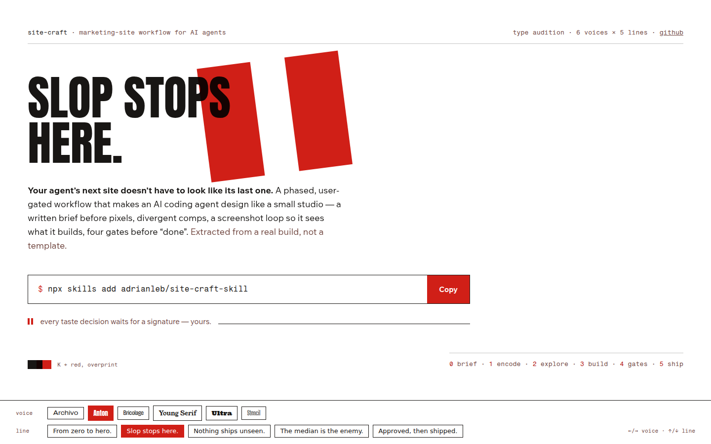<figcaption>“Slop stops here.” · Anton</figcaption></figure><figure>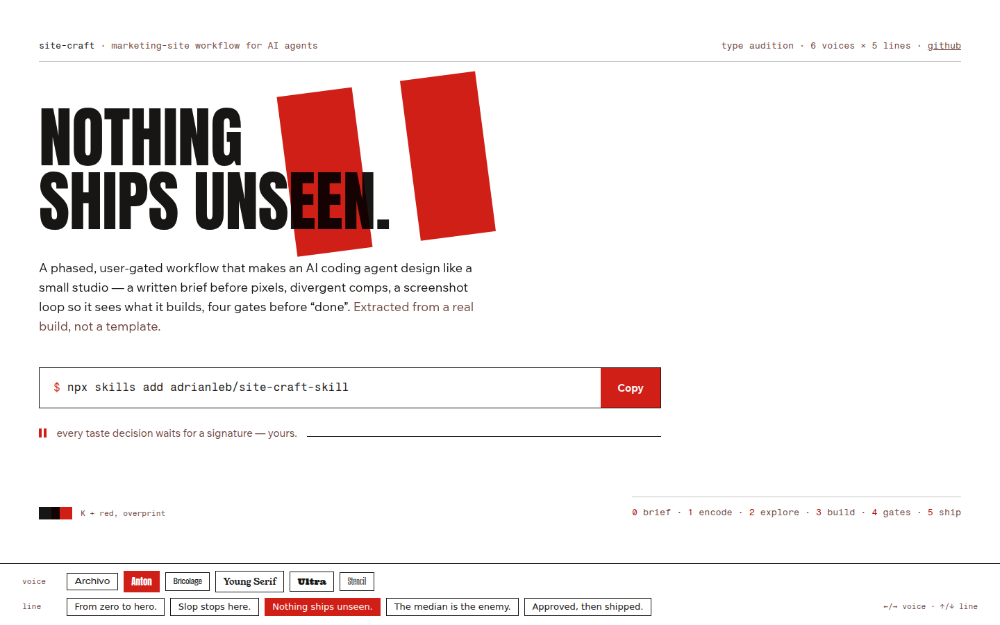<figcaption>“Nothing ships unseen.” · Anton</figcaption></figure><figure>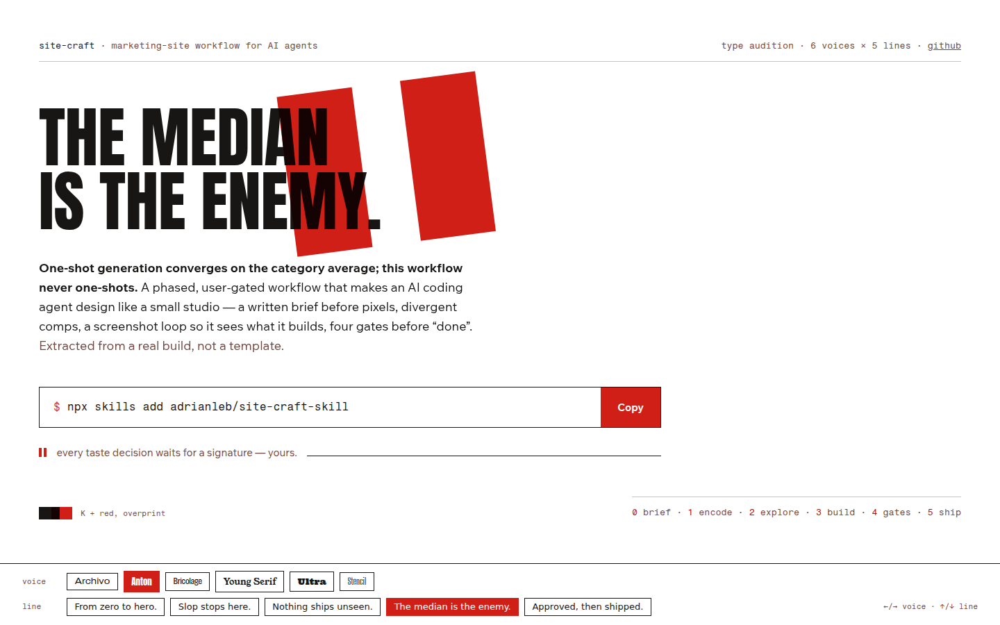<figcaption>“The median is the enemy.” · Anton</figcaption></figure><figure>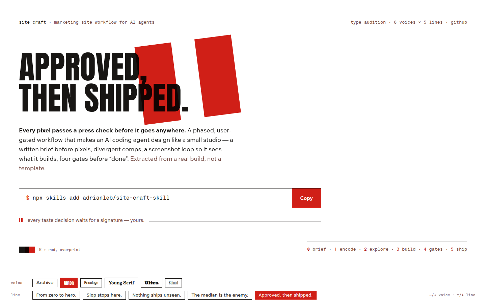<figcaption>“Approved, then shipped.” · Anton</figcaption></figure></div>
</section>
<section class="reco" id="reco">
  <h2>Recommendation: Anton, with “From zero to hero.”</h2>
  <p><b>Voice: Anton.</b> It’s a printing face doing printing work — condensed woodtype that
  makes the red bars read as parts of one poster system rather than decoration on a website.
  Runner-up, worth recording: <b>Bricolage Grotesque</b> — pick it instead if you want lowercase
  warmth and variable-axis flexibility over sheer poster force.</p>
  <p><b>Line: “From zero to hero.”</b> Your instinct, and it survives scrutiny: it’s literally
  true (the workflow starts at Phase 0; its first deliverable is a hero), the O’s overprint the
  bars beautifully, and it’s the only line that smiles. Runner-up “Nothing ships unseen.” —
  which I’d spend as the screenshot-loop section heading, with the remaining lines heading
  their own sections.</p>
  <p class="verdictline">⏸ Name the voice (+ runner-up) and the line. Then DESIGN.md locks and
  the full page gets built.</p>
</section>